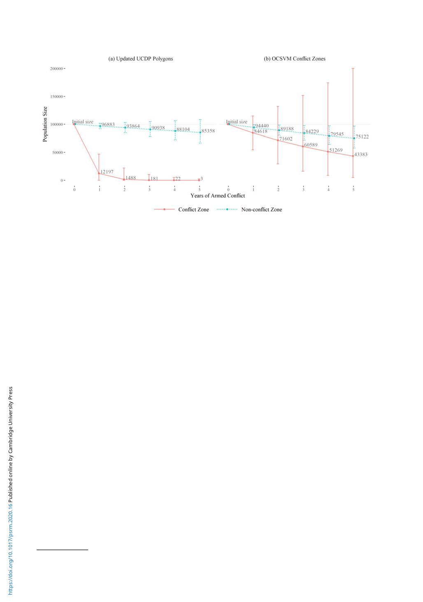

Political Science Research and Methods 113
Figure 8. The ecological costs of armed conflict.
Note: The figure shows the estimated trajectories of a hypothetical mammal population. The initial size of the population is 100 thou-
sands. The left and right panes show the population trajectories estimated with the UCDP Polygons (exact replication of Daskin and
Pringle (2018)) and with the OCSVM-based conflict zones. The dotted blue lines are the population trajectories in protected areas
any part of which does not experience armed conflict. The solid red lines are the population trajectories in protected areas which totally
belong to conflict zones.
In fact, the new conflict zones also substantially alter the results of Beardsley et al. (2015), who use the
UCDP Polygons for measuring rebels’ movement in an analysis with a relatively small sample (n =
257). By contrast, the new measure does not alter the main findings of Fjelde and Hultman (2014),
who use the conflict zones for selecting a sample in an analysis with large panel data.38
These results, however, do not mean that a larger number of observations can always mitigate
the biases from measurement errors. In fact, the measurement errors in Beardsley et al. (2015)
have systematic patterns that will not disappear even with a large sample. This demonstrates
that the biases in empirical estimates can persist. Thus, it is advised for future studies to carefully
assess the underlying assumptions of conflict zones and the patterns of the measurement errors.
If the measurement errors are not systematic, a large sample can help (even though it can cause
attenuation biases). If the measurement errors are systematic, however, the empirical findings
must be taken with great caution.
8. Conclusion
In conflict studies, the selection of areal units is so common that people may not recognize that
the areal assignment is indeed an assumption. Without properly understanding where armed
conflict takes place, however, we cannot know why armed conflict occurs or what its conse-
quences are. In this paper, I have addressed the areal-unit problems by developing a theory,
method, and dataset of conflict zones. I define a zone as a summary function that maps locations
and other relevant information onto the presence and absence of armed conflict. This formaliza-
tion clarifies that the zoning exercise is essentially a statistical problem—it is a matter of how we
can infer a zoning function from observed data of conflict events. I answer this question by apply-
ing the OCSVM, which unlike other deterministic or statistical methods does not depend on a
predefined areal unit. I apply the OCSVM to the UCDP GED conflict event dataset and create
a new dataset of conflict zones. The replication of Daskin and Pringle (2018) indeed indicates
38I choose these two studies as they are the most cited articles that use the UCDP Polygons (confirmed on 20 November
2019 at Google Scholar).